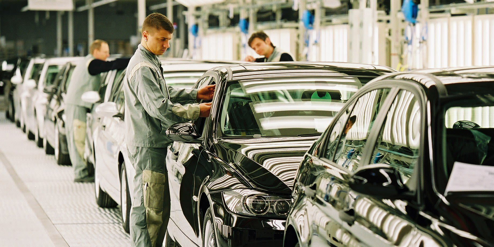

42.300 Jobs später

{kind=link}
Deutschlands Autoindustrie verliert binnen eines Jahres 42.300 Arbeitsplätze. Ende Juni waren noch 691.500 Menschen beschäftigt – 5,8 Prozent weniger als im Vorjahr und so wenige wie seit 2005 nicht mehr. Bei den Zulieferern betrug das Minus sogar 7,6 Prozent.
Der österreichische Bezahlfunk stellt die chinesische Konkurrenz und die US-Zölle an den Anfang. So klingt der Arbeitsplatzabbau wie die Folge äußerer Mächte.
Dabei sind Chinas Preisvorteil, die US-Zölle und Deutschlands Kostennachteil vor allem eines: Politik.
Peking hat über Jahre eine vollständige Elektroautoindustrie aufgebaut – mit Subventionen, günstiger Finanzierung, Rohstoffzugang, Batteriefabriken, heimischen Lieferketten und gewaltigen Stückzahlen. Die EU-Kommission stellte nach ihrer Untersuchung eine unfaire Subventionierung chinesischer Elektroautos fest.
China produzierte 2025 bereits 70 Prozent aller Elektroautos und mehr als 80 Prozent der Batteriezellen weltweit. Chinesische Batteriepakete waren nach Berechnungen der Internationalen Energieagentur 35 Prozent billiger als europäische.
Auch beim Strom ist der Unterschied politisch organisiert. Laut IEA lagen die Strompreise energieintensiver EU-Betriebe 2025 mehr als 50 Prozent über dem chinesischen Niveau. Innerhalb Europas gehört Deutschland zusätzlich zur Spitzengruppe: Gewerbliche Verbraucher mit 500 bis 2.000 Megawattstunden Jahresverbrauch zahlten laut Eurostat 22,64 Cent je Kilowattstunde. Der EU-Durchschnitt lag bei 18,37 Cent, Finnland bei 7,48 Cent.
Im deutschen verarbeitenden Gewerbe kostete eine Arbeitsstunde 2025 laut Statistischem Bundesamt 49,50 Euro – 41 Prozent mehr als im EU-Durchschnitt. Auf 100 Euro Bruttoverdienst kommen zusätzlich 29 Euro Lohnnebenkosten.
Während China Produktion verbilligt, organisiert Brüssel den Regelbetrieb.
Ab 2035 verlangt die EU für neue Autos eine Senkung der Flottenemissionen um 100 Prozent. Damit zwingt sie Europas Hersteller in einen zeitlich festgelegten Umbau zu einer Technologie, deren wichtigste Lieferkette China bereits beherrscht.
Gleichzeitig kommt Euro 7. Die Verordnung betrifft nicht nur Abgase. Hersteller müssen künftig auch Grenzwerte und Haltbarkeit bei Brems- und Reifenabrieb, Batterien und anderen Fahrzeugkomponenten nachweisen. Hinzu kommen neue Prüfungen über die Lebensdauer, On-Board-Diagnose und die Bereitstellung von Emissions- und Batteriedaten. Für neue Pkw-Typen gelten die Vorgaben ab November 2026, für alle Neuwagen ein Jahr später.
Die Batterieverordnung verlangt CO₂-Berechnungen, Materialnachweise, Recyclingvorgaben und ab Februar 2027 einen digitalen Batteriepass. Die neue Altfahrzeugverordnung schreibt demontagegerechte Konstruktionen, Recyclingkunststoff und einen weiteren digitalen Fahrzeugpass vor. Die Entwaldungsverordnung erfasst Naturkautschuk für Reifen. Dazu kommen CSRD, europäische Lieferkettenpflichten, Zwangsarbeitsnachweise, Data Act und weitere Berichtssysteme.
Jede dieser Regeln braucht Entwickler, Prüfer, Juristen, Berater, Datenbanken und Kontrolleure. Keine davon senkt den Strompreis, produziert eine Batteriezelle oder macht ein Auto günstiger.
Dass dieser Regelstapel industriell nicht mehr funktioniert, zeigt Brüssel inzwischen selbst. Die EU musste die CO₂-Erfüllung für 2025 bis 2027 nachträglich über drei Jahre verteilen. Batteriesorgfaltspflichten wurden um zwei Jahre verschoben. CSRD und europäische Lieferkettenregeln wurden 2026 ausdrücklich entschärft, um „unnötige und unverhältnismäßige Belastungen“ zu reduzieren und die Wettbewerbsfähigkeit zu stärken.
Der politische Irrsinn liegt nicht im Elektromotor. Er liegt darin, eine Transformation vorzuschreiben, während man Energie verteuert, Arbeit mit Abgaben belastet, Produktion mit immer neuen Nachweisen überzieht und die entscheidende Lieferkette China überlässt.
China hat seiner Autoindustrie die Bedingungen zum Gewinnen gegeben. Berlin und Brüssel haben ihrer Autoindustrie Vorschriften zum Erfüllen gegeben.
42.300 Arbeitsplätze später heißt der Unterschied dann einfach: chinesische Konkurrenz.
Mehr dazu: Wie Brüssel die Wirtschaft erstickt